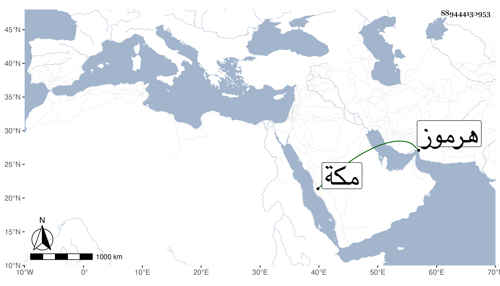

0902Sakhawi.DawLamic.ITO20230111-ara1.EIS1600.889444130953
Biography ID: 889444130953
885
زائد بن محمد بن إسماعيل القلهاني الأصل نسبة لبلدة من أعمال هرموز المكي الشافعي أحد الشهود بباب السلام . ممن حضر كثيرا من مجالسي بمكة ومولده بها سنة ثمان وخمسين وثمانمائة ، ونشأ فاشتغل عند النور بن عطيف وأبي العزم ولازم دروس الجمالي أبي السعود وربما حضر عند والده . وكان الشيخ عبد المعطي يمشيه عنده ثم صارت عليه قابلية في صناعته بالنسبة للجالسين هناك .
